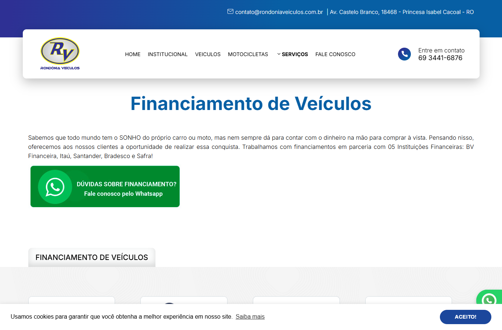
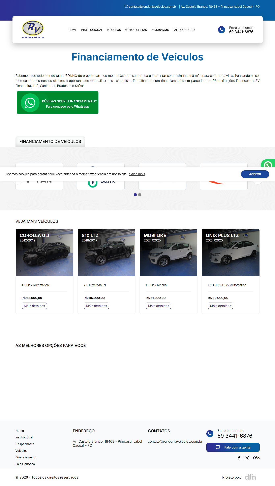

SIMIO · dossiê de candidato · campanha simio-20261119-174043-8bbc · gerado em 2026-11-19T21:22:03+00:00
https://www.rondoniaveiculos.com.br/financiamento-veiculos?url=financiamento-veiculos
REVIEW_REQUIRED Prioridade MEDIUM · Cenário B_AMBIGUOUS_COMMUNICATION · Revisão humana: PENDING
Este dossiê apresenta indícios para apoio à auditoria. Não constitui conclusão regulatória. As conclusões automatizadas devem ser verificadas contra as evidências brutas abaixo (screenshots, catálogo e arquivos com hash). Conteúdo de terceiros é exibido como texto; links não são clicáveis por segurança.
Trata-se de página de financiamento de uma revenda de veículos multimarcas ('Rondônia Veículos') claramente identificada por marca própria, domínio, endereço e canais de contato. A menção à 'BV Financeira' ocorre de forma legítima e contextualizada ao lado de outros quatro bancos concorrentes (Itaú, Santander, Bradesco e Safra) como opções de parceria para financiamento de veículos na loja, enquadrando-se no cenário A_LEGITIMATE_COMMERCIAL_MENTION sem qualquer indício de confusão com canal oficial do Banco BV.


| Ref | Tipo | Local | Conteúdo |
|---|---|---|---|
| E-URL | domain | url | URL final: https://www.rondoniaveiculos.com.br/financiamento-veiculos?url=financiamento-veiculos (domínio: www.rondoniaveiculos.com.br) |
| E-DISC-001 | text | search_index | Índice de busca (grounding): rondoniaveiculos.com.br — **Evidência:** Subpágina de financiamento de veículos que destaca parceria com a **BV Financeira** para atrair clientes para cotação e envio de propostas via telefone e WhatsApp da loja |
| E-SHOT-VIEWPORT | screenshot | viewport | evidence\C1ea32c2e50\attempt-1\viewport.png (sha256 f31e28766a2a5beb…) |
| E-SHOT-FULL | screenshot | page | evidence\C1ea32c2e50\attempt-1\fullpage.png (sha256 bf051d961d122e34…) |
| E-TITLE | title | head | Rondônia Veículos - Veículos seminovos e usados em Cacoal, Rondônia |
| E-META-1 | meta | head | description: Quer financiar seu carro? Faça agora mesmo uma simulação de financiamento de seu veículo, carro, moto, caminhão ou ônibus na Rondônia Veículos. |
| E-META-2 | meta | head | author: Agência Define |
| E-HEAD-1 | heading | page | Financiamento de Veículos |
| E-HEAD-2 | heading | page | FINANCIAMENTO DE VEÍCULOS |
| E-HEAD-3 | heading | page | VEJA MAIS VEÍCULOS |
| E-HEAD-4 | heading | page | COROLLA GLI |
| E-HEAD-5 | heading | page | 1.8 Flex Automático |
| E-HEAD-6 | heading | page | S10 LTZ |
| E-HEAD-7 | heading | page | 2.5 Flex Manual |
| E-HEAD-8 | heading | page | MOBI LIKE |
| E-HEAD-9 | heading | page | 1.0 Flex Manual |
| E-HEAD-10 | heading | page | ONIX PLUS LTZ |
| E-HEAD-11 | heading | page | 1.0 TURBO Flex Automático |
| E-HEAD-12 | heading | page | AS MELHORES OPÇÕES PARA VOCÊ |
| E-HDR | text | header | HOME INSTITUCIONAL VEICULOS MOTOCICLETAS SERVIÇOS FALE CONOSCO Entre em contato 69 3441-6876 |
| E-FOLD | text | viewport (acima da dobra) | Usamos cookies para garantir que você obtenha a melhor experiência em nosso site. Saiba mais ACEITO! contato@rondoniaveiculos.com.br Av. Castelo Branco, 18468 - Princesa Isabel Cacoal - RO Home Institucional veiculos Motocicletas Serviços Fale Conosco Entre em contato 69 3441-6876 Financiamento de Veículos Sabemos que todo mundo tem o SONHO do próprio carro ou moto, mas nem sempre dá para contar com o dinheiro na mão para comprar à vista. Pensando nisso, oferecemos aos nossos clientes a oportunidade de realizar essa conquista. Trabalhamos com financiamentos em parceria com 05 Instituições Financeiras: BV Financeira, Itaú, Santander, Bradesco e Safra! Financiamento de veículos ‹ › |
| E-FTR | text | footer | Home Institucional Despachante Veículos Financiamento Fale Conosco ENDEREÇO Av. Castelo Branco, 18468 - Princesa Isabel Cacoal – RO CONTATOS contato@rondoniaveiculos.com.br Entre em contato 69 3441-6876 Fale com a gente © 2026 - Todos os direitos reservados Projeto por: |
| E-NAV | nav | header | <https://www.rondoniaveiculos.com.br/> | HOME <https://www.rondoniaveiculos.com.br/> | INSTITUCIONAL <https://www.rondoniaveiculos.com.br/institucional> | VEICULOS <https://www.rondoniaveiculos.com.br/veiculos> | MOTOCICLETAS <https://www.rondoniaveiculos.com.br/veiculos&cat=motocicleta> | SERVIÇOS <https://www.rondoniaveiculos.com.br/financiamento-veiculos?url=financiamento-veiculos#> | FALE CONOSCO <https://www.rondoniaveiculos.com.br/fale-conosco> |
| E-CTA-1 | cta | page | Saiba mais <https://www.rondoniaveiculos.com.br/fale-conosco> |
| E-CTA-2 | cta | page | ACEITO! |
| E-CTA-3 | cta | page | ‹ |
| E-CTA-4 | cta | page | › |
| E-CTA-5 | cta | page | Mais detalhes <https://www.rondoniaveiculos.com.br/veiculos/9663/Toyota/corolla-gli/2012> |
| E-CTA-6 | cta | page | Mais detalhes <https://www.rondoniaveiculos.com.br/veiculos/9583/Chevrolet/s10-ltz/2017> |
| E-CTA-7 | cta | page | Mais detalhes <https://www.rondoniaveiculos.com.br/veiculos/9508/Fiat/mobi-like/2025> |
| E-CTA-8 | cta | page | Mais detalhes <https://www.rondoniaveiculos.com.br/veiculos/9428/Chevrolet/onix-plus-ltz/2025> |
| E-CTA-9 | cta | footer | Fale com a gente <https://www.rondoniaveiculos.com.br/fale-conosco> |
| E-CONTACT-1 | contact | page | contato@rondoniaveiculos.com.br <mailto:contato@rondoniaveiculos.com.br> |
| E-CONTACT-2 | contact | page | <https://api.whatsapp.com/send?phone=556934416876> |
| E-CONTACT-3 | contact | page | <https://web.whatsapp.com/send?phone=556934416876> |
| E-CONTACT-4 | contact | footer | <https://www.facebook.com/RV.rondoniaveiculos/> |
| E-CONTACT-5 | contact | footer | <https://www.instagram.com/rondonia.veiculos/> |
| E-CONTACT-6 | contact | page | <https://api.whatsapp.com/send?phone=556934416876> |
| E-CONTACT-7 | contact | page | <https://web.whatsapp.com/send?phone=556934416876> |
| E-IMG-1 | image | header (acima da dobra) | imagem alt='Rondônia Veículos' src=https://www.rondoniaveiculos.com.br/img/logo.png (123x100, acima da dobra) |
| E-IMG-2 | image | page (acima da dobra) | imagem alt='BV Financeira' src=https://www.rondoniaveiculos.com.br/img/bv-financeira2.png (237x135, acima da dobra) |
| E-IMG-3 | image | footer | imagem alt='Define Web' src=https://www.rondoniaveiculos.com.br/img/logo-define.png (92x43, abaixo da dobra) |
| E-TXT-001 | text | page | Sabemos que todo mundo tem o SONHO do próprio carro ou moto, mas nem sempre dá para contar com o dinheiro na mão para comprar à vista. Pensando nisso, oferecemos aos nossos clientes a oportunidade de realizar essa conquista. Trabalhamos com financiamentos em parceria com 05 Instituições Financeiras: BV Financeira, Itaú, Santander, Bradesco e Safra! |
| E-TXT-002 | text | page | ENDEREÇO |
| Dimensão | Sinal | Achado | Refs |
|---|---|---|---|
| VISUAL_IDENTITY | LEGITIMATE | A página apresenta identidade visual própria da revenda 'Rondônia Veículos' (logotipo 'RV Rondônia Veículos' no cabeçalho, cores azul/branco/amarelo e domínio próprio rondoniaveiculos.com.br), sem imitar a identidade visual do Banco BV. | E-URL E-IMG-1 E-SHOT-VIEWPORT E-SHOT-FULL |
| DECLARED_COMMERCIAL_IDENTITY | LEGITIMATE | O estabelecimento identifica-se claramente como 'Rondônia Veículos', loja de veículos seminovos e usados localizada em Cacoal - RO, embora não exiba CNPJ no rodapé da página coletada. | E-TITLE E-META-1 E-FOLD E-FTR |
| CORRESPONDENT_TRANSPARENCY | LEGITIMATE | Embora não utilize o termo formal 'correspondente no País', informa de modo transparente que atua como loja de veículos que oferece financiamentos 'em parceria com 05 Instituições Financeiras: BV Financeira, Itaú, Santander, Bradesco e Safra!'. | E-FOLD E-TXT-001 |
| INSTITUTIONAL_LANGUAGE | LEGITIMATE | A linguagem é comercial e escrita em nome da própria revenda de veículos, sem alegar oficialidade ou representação exclusiva do Banco BV. | E-META-1 E-TXT-001 |
| LOGO_USAGE | LEGITIMATE | Há referência a imagem da 'BV Financeira' inserida em um carrossel multibancos de opções de financiamento, ao lado de outras instituições financeiras concorrentes. | E-IMG-2 E-TXT-001 E-SHOT-FULL |
| SERVICE_JOURNEY | LEGITIMATE | A jornada da página é voltada para a venda e simulação de financiamento de veículos do estoque da loja (Corolla, S10, Mobi, Onix), sem oferta de serviços pós-venda bancários sensíveis (como 2ª via de boleto ou quitação). | E-HEAD-3 E-HEAD-4 E-HEAD-6 E-HEAD-8 E-HEAD-10 E-SHOT-FULL |
| CONTACT_CHANNELS | LEGITIMATE | Os canais de contato (telefone 69 3441-6876, WhatsApp, e-mail contato@rondoniaveiculos.com.br e redes sociais) estão claramente vinculados à loja Rondônia Veículos. | E-HDR E-FTR E-CONTACT-1 E-CONTACT-2 E-CONTACT-4 E-CONTACT-5 |
| CONSUMER_CONFUSION | LEGITIMATE | Não há risco de confusão para o consumidor; fica evidente que se trata de uma revenda multimarcas de veículos que intermedia financiamentos com diversos bancos parceiros. | E-URL E-TITLE E-TXT-001 E-SHOT-VIEWPORT |
Trata-se de página de financiamento de uma revenda de veículos multimarcas ('Rondônia Veículos') claramente identificada por marca própria, domínio, endereço e canais de contato. A menção à 'BV Financeira' ocorre de forma legítima e contextualizada ao lado de outros quatro bancos concorrentes (Itaú, Santander, Bradesco e Safra) como opções de parceria para financiamento de veículos na loja, enquadrando-se no cenário A_LEGITIMATE_COMMERCIAL_MENTION sem qualquer indício de confusão com canal oficial do Banco BV.
Nenhum CNPJ ou razão social identificáveis no conteúdo coletado.
| Tipo | Valor | Ref | Contexto |
|---|---|---|---|
| domain | rondoniaveiculos.com.br | E-URL | |
| contato@rondoniaveiculos.com.br | E-FOLD | ||
| social_profile | https://www.facebook.com/RV.rondoniaveiculos/ | E-CONTACT-4 | |
| social_profile | https://www.instagram.com/rondonia.veiculos/ | E-CONTACT-5 | |
| phone | 69 3441-6876 | E-HDR | |
| Índice de busca (grounding): rondoniaveiculos.com.br — **Evidência:** Subpágina de financiamento de veículos que destaca parceria com a **BV Financeira** para atrair clientes para cotação e envio de p | E-DISC-001 | ||
| <https://api.whatsapp.com/send?phone=556934416876> | E-CONTACT-2 | ||
| <https://web.whatsapp.com/send?phone=556934416876> | E-CONTACT-3 | ||
| partnership_declaration | parceria | E-DISC-001 | **Evidência:** Subpágina de financiamento de veículos que destaca parceria com a **BV Financeira** para atrair clientes para cotação e envio de propostas via telefone e WhatsApp da loja |
| partnership_declaration | em parceria com | E-FOLD | Trabalhamos com financiamentos em parceria com 05 Instituições Financeiras: BV Financeira, Itaú, Santander, Bradesco e Safra! |
Mapeamento indicativo para apoio à auditoria. Não constitui conclusão regulatória; a decisão definitiva pertence à auditoria.
Fonte: NORMATIVE
Art. 14. O contrato de correspondente deve estabelecer: [...] II - vedação à utilização, pelo contratado, de logomarca ou de outros atributos que sejam similares aos adotados pela instituição contratante em suas agências, postos de atendimento, sítio eletrônico na internet, aplicativo ou outras plataformas de comunicação em rede;
Hipótese: Uso de logomarca ou de atributos similares aos adotados pela contratante em seus canais. A norma disciplina correspondentes contratados; o responsável não foi identificado como correspondente.
Evidência observada: E-IMG-1 E-IMG-2 E-IMG-3
Informação faltante:
Fonte: NORMATIVE
Art. 14. O contrato de correspondente deve estabelecer: [...] III - divulgação ao público, pelo contratado, de sua condição de prestador de serviços à instituição contratante, identificada pelo nome com que é conhecida no mercado, com descrição dos produtos e serviços oferecidos e canais de contato da instituição contratante, inclusive de sua ouvidoria, em local visível, em destaque e em formato legível, por meio de: a) sítio eletrônico do correspondente na internet, acessível na página inicial; b) aplicativo e outras plataformas de comunicação em rede do correspondente; [...]
Hipótese: Há declaração da condição de correspondente/prestador, mas outros elementos da página (CONTACT_CHANNELS) podem contradizê-la ou reduzir seu efeito (destaque, legibilidade e identificação da contratante a verificar). A norma disciplina correspondentes contratados; o responsável não foi identificado como correspondente.
Evidência observada: E-CONTACT-2 E-CONTACT-3 E-DISC-001 E-FOLD E-FTR
Informação faltante:
Fonte: NORMATIVE
Art. 3º O correspondente atua por conta e sob as diretrizes da instituição contratante, que assume inteira responsabilidade pelo atendimento prestado aos clientes e usuários por meio do contratado.
Hipótese: Atendimento ao público prestado por meio do contratado em condições que podem não seguir as diretrizes da contratante. A norma disciplina correspondentes contratados; o responsável não foi identificado como correspondente.
Evidência observada: E-CONTACT-2 E-CONTACT-3 E-DISC-001
Informação faltante:
Se o responsável não for correspondente contratado, os indícios podem caracterizar uso indevido de marca ou fraude, fora do escopo da Res. 4.935: avaliar encaminhamento às áreas jurídica/segurança.
Limitações: requisitos contratuais/internos não fornecidos: mapeamento limitado ao texto normativo
| Fonte | Consulta / hipótese | URL original | Título / trecho |
|---|---|---|---|
| grounding | páginas de financiamento de carro usando a marca Banco BV ou bv financeira mantidas por lojas, promotoras ou correspondentes bancários onde a marca do banco aparece em destaque principal, com simulador ou captação sem identificar claramente a condição de correspondente independente H2-product:financiamento de carro | https://www.rondoniaveiculos.com.br/financiamento-veiculos?url=financiamento-veiculos | rondoniaveiculos.com.br **Evidência:** Subpágina de financiamento de veículos que destaca parceria com a **BV Financeira** para atrair clientes para cotação e envio de propostas via telefone e WhatsApp da loja |
Original: https://www.rondoniaveiculos.com.br/financiamento-veiculos?url=financiamento-veiculos
Final: https://www.rondoniaveiculos.com.br/financiamento-veiculos?url=financiamento-veiculos
| Artefato | Caminho | SHA-256 | Bytes |
|---|---|---|---|
| screenshot_viewport | evidence\C1ea32c2e50\attempt-1\viewport.png | f31e28766a2a5bebfb6ccc5a53bca58b4b2758cb23d6ed510ee281aaf2d2d0ff | 168813 |
| screenshot_full | evidence\C1ea32c2e50\attempt-1\fullpage.png | bf051d961d122e34149d23208c6eb48edb559b1264d3ae951ef99dc364710541 | 635771 |
| html | evidence\C1ea32c2e50\attempt-1\page.html.txt | c99a9a68194c932e648d372affb5a82b7f85aa9a3abd0ec89ba0456dcdfa50bb | 29344 |
| text | evidence\C1ea32c2e50\attempt-1\text.txt | c59ed978c8010f7276b0ca6751e886d7fba873667ebcd27b18d661a89a1d119e | 1313 |
| page_data | evidence\C1ea32c2e50\attempt-1\page.json | 885dbf0d0fe1f06f2057258918abe0e3edeefc7ecfb20038fecd24f061804bc5 | 14487 |
| Quando | De | Para | Nota |
|---|---|---|---|
| 2026-11-19T18:10:11+00:00 | DISCOVERED | QUEUED | prioritised (score 2.0) |
| 2026-11-19T18:20:53+00:00 | QUEUED | COLLECTING | |
| 2026-11-19T18:21:02+00:00 | COLLECTING | COLLECTED | |
| 2026-11-19T18:21:02+00:00 | COLLECTED | ANALYZING | |
| 2026-11-19T18:21:31+00:00 | ANALYZING | COMPLETED |